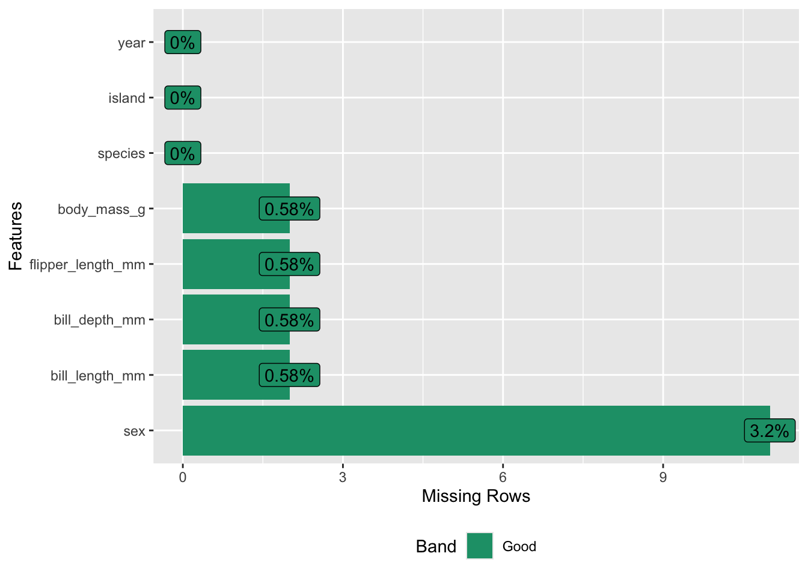
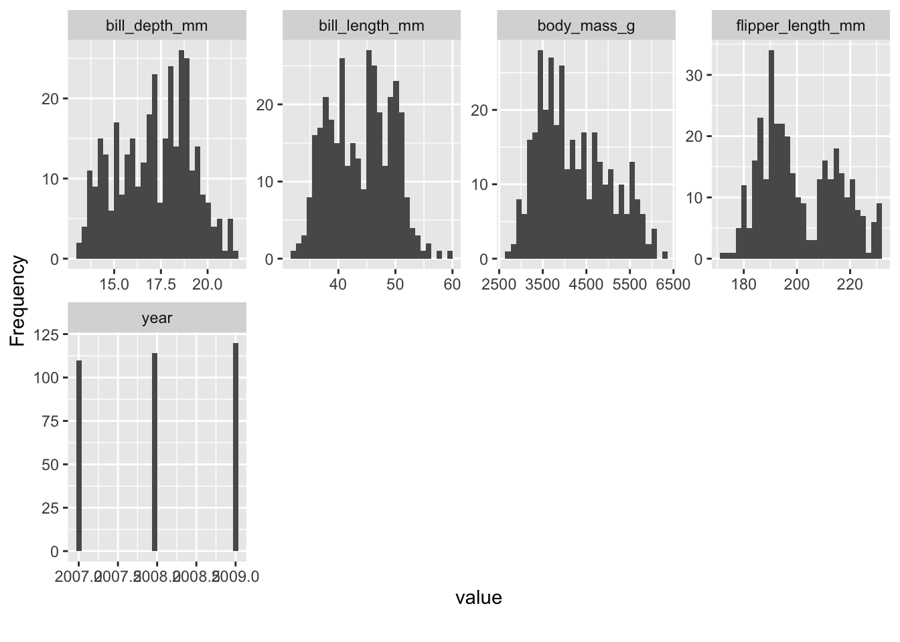
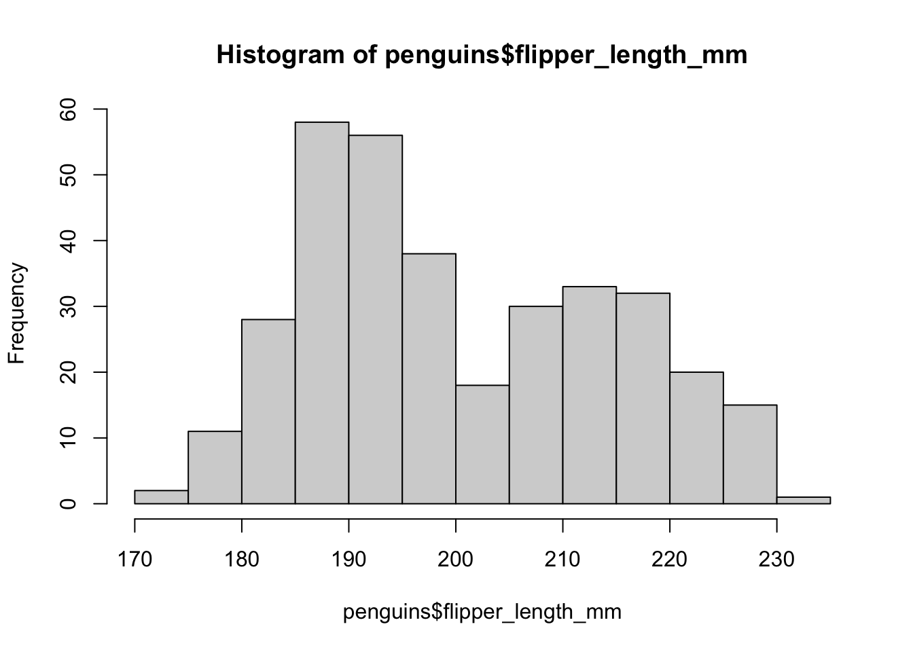
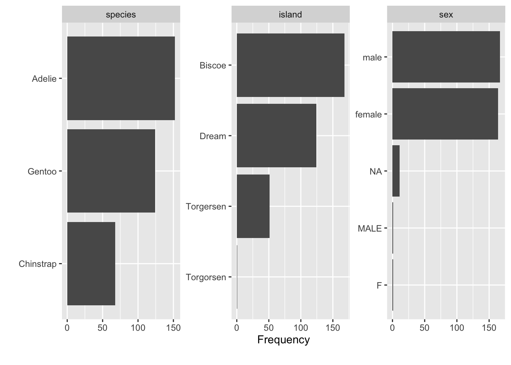
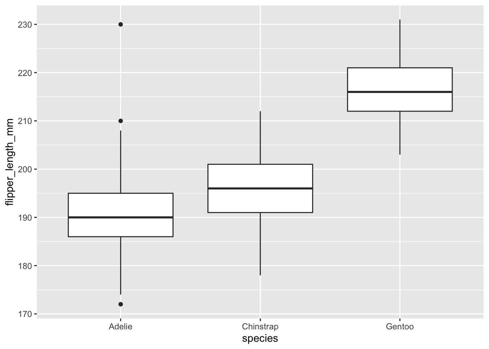
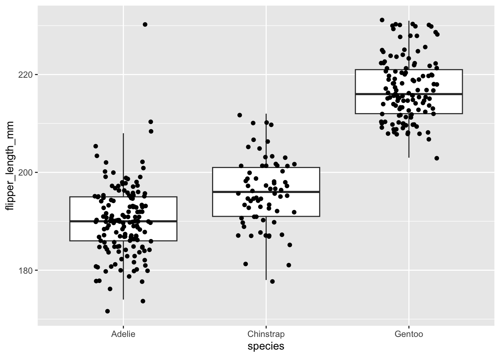
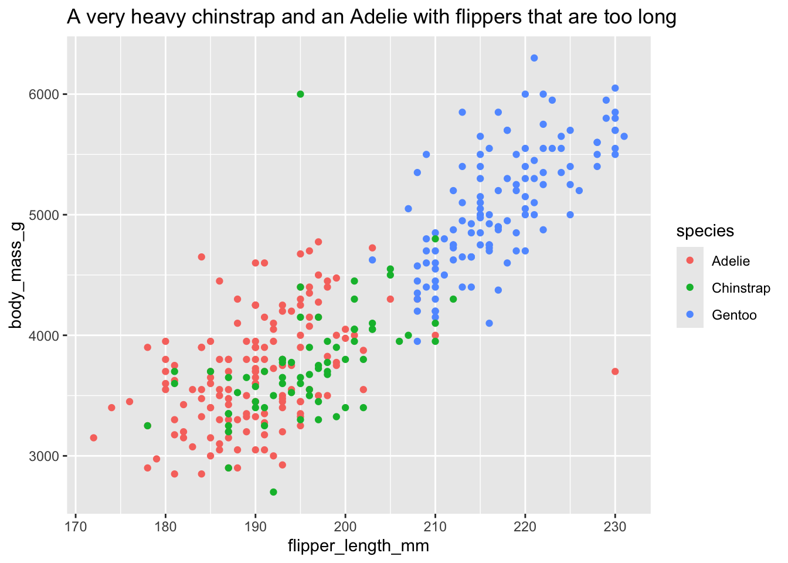
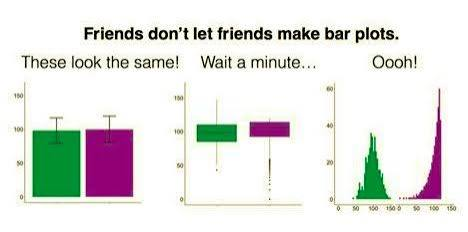
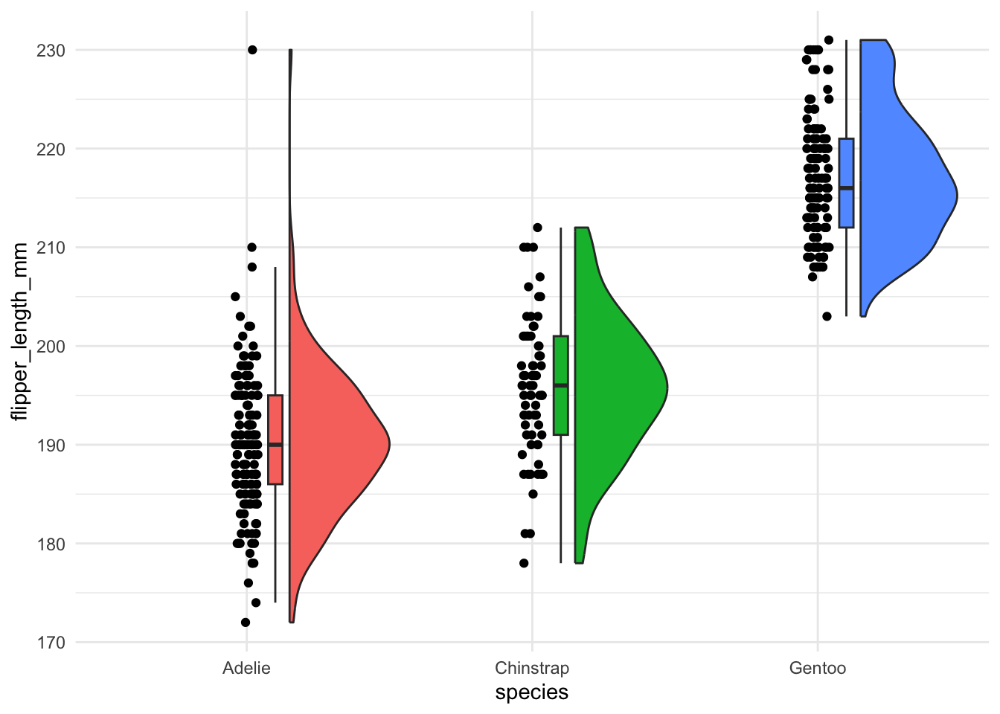
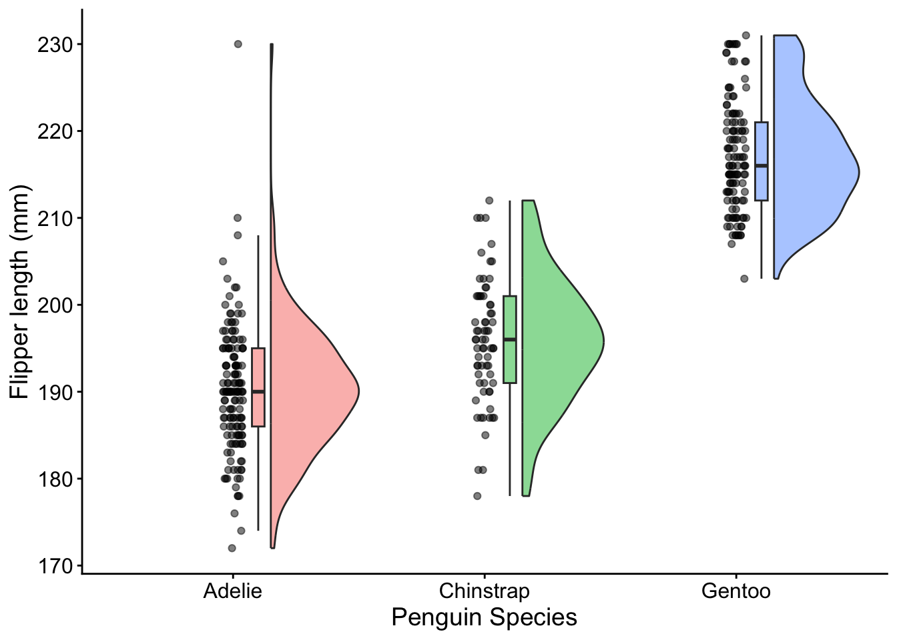

library(tidyverse)
library(DataExplorer)
library(skimr)
library(ggrain)
library(ggeasy)
penguins <- read_csv(here::here("messy_penguins.csv"))plotting for survey research
why plot your data?
check your data
- summary statistics can hide wildly different distributions
- errors (impossible values, coding issues) become visible
- you can see the shape (skew, outliers, bimodality, ceiling/floor effects)
tell your story
- a good figure makes your effect obvious, it is easier for your marker to digest than a table, or summary stats in the text
- a figure that presents your findings transparently will make your thesis stand out in your marker’s pile
This resource is designed to walk you through the process of making plots that check your data for errors and produce plots that tell your story. You can choose to use the open source GUI-based software JAMOVI, in combinatinon with the vijPlots module, or to use the ggplot package in RStudio.
ggplot
plots to check your data
WHen you are checking your data for distribution problems and data entry errors, quick and dirty plots are the way to go. Packages like DataExplorer and skimr have great functions to make quick exploratory plots.
At this stage we are looking for
- missingness
- weird distributions
- values that could be errors
missingness
plot_missing(penguins)
shape
skim(penguins)| Name | penguins |
| Number of rows | 344 |
| Number of columns | 8 |
| _______________________ | |
| Column type frequency: | |
| character | 3 |
| numeric | 5 |
| ________________________ | |
| Group variables | None |
Variable type: character
| skim_variable | n_missing | complete_rate | min | max | empty | n_unique | whitespace |
|---|---|---|---|---|---|---|---|
| species | 0 | 1.00 | 6 | 9 | 0 | 3 | 0 |
| island | 0 | 1.00 | 5 | 9 | 0 | 4 | 0 |
| sex | 11 | 0.97 | 1 | 6 | 0 | 4 | 0 |
Variable type: numeric
| skim_variable | n_missing | complete_rate | mean | sd | p0 | p25 | p50 | p75 | p100 | hist |
|---|---|---|---|---|---|---|---|---|---|---|
| bill_length_mm | 2 | 0.99 | 43.92 | 5.46 | 32.1 | 39.23 | 44.45 | 48.50 | 59.6 | ▃▇▇▆▁ |
| bill_depth_mm | 2 | 0.99 | 17.15 | 1.97 | 13.1 | 15.60 | 17.30 | 18.70 | 21.5 | ▅▅▇▇▂ |
| flipper_length_mm | 2 | 0.99 | 201.03 | 14.14 | 172.0 | 190.00 | 197.00 | 213.75 | 231.0 | ▂▇▃▅▃ |
| body_mass_g | 2 | 0.99 | 4208.04 | 807.60 | 2700.0 | 3550.00 | 4050.00 | 4768.75 | 6300.0 | ▃▇▆▃▂ |
| year | 0 | 1.00 | 2008.03 | 0.82 | 2007.0 | 2007.00 | 2008.00 | 2009.00 | 2009.0 | ▇▁▇▁▇ |
plot_histogram(penguins)
hist(penguins$flipper_length_mm)
errors
To catch coding errors, plot categorical variables as a bar plot. Extra categories misspelled cells will reveal themselves.
plot_bar(penguins)
To catch other data entry errors, plot the raw data, first as a box plot and then with jittered points overlaid. Look for impossible values.
penguins %>%
ggplot(aes(x = species, y = flipper_length_mm)) +
geom_boxplot() 
penguins %>%
ggplot(aes(x = species, y = flipper_length_mm)) +
geom_boxplot(outlier.shape = NA) +
geom_jitter(width = 0.2)
Making a scatterplot of variables you expect to be correlated and colouring points by another variable can make data entry errors stick out too.
penguins %>%
ggplot(aes(x = flipper_length_mm, y = body_mass_g, colour = species)) +
geom_point() +
labs(title= "A very heavy chinstrap and an Adelie with flippers that are too long")
Note
DataExplorer::create_report(df)automagically creates a report that includes lots of data checks. They won’t all be relevant to all projects, but it is a good quick and dirty way to get many of the plots you need to check your data
| The check | The question you’re asking | The plot |
|---|---|---|
| Missing | What isn’t here — and is it random or patterned? | plot_missing() / vis_miss() |
| Mis-shaped | What shape is each variable? Skew, ceiling/floor, bimodality? | skim(), then plot_histogram() |
| Mis-coded | Are the categories consistent, or full of typos and stray levels? | bar plot (plot_bar) |
| Impossible | Are any values out of bounds on their own? | boxplot + jittered points |
| Impossible together | Are any values wrong in combination? | scatterplot (geom_point) |
plots to tell a story
why not a bar plot?
Published psychology articles are full of bar plots with standard error bars. Why?
bar plots are good because they…
- show differences in the mean between groups
- give your reader an idea of whether group might be significant
bar plots are bad because they…
- can make wildly different data look similar
- hide bimodal, skew, outliers, ceiling/floor effects

Your marker will have lots of boring bar plots in their pile. What if your plots were more interesting and informative?
raincloud plots
A raincloud plot allows you to display the shape of the distribution, summary stats and raw points in a single plot.
penguins %>%
ggplot(aes(x = species, y = flipper_length_mm, fill = species)) +
geom_rain() +
theme_minimal() +
guides(fill = "none") # removes the legend
Making it thesis worthy. Add dot transparency, fix the theme to be more apa-esque, add x and y axis labels, fix the text size.
penguins %>%
ggplot(aes(x = species, y = flipper_length_mm, fill = species)) +
geom_rain(alpha = 0.5) + #a dd transparency
theme_minimal() +
guides(fill = "none") + # remove the legend
theme_classic() +
labs(x = "Penguin Species", y = "Flipper length (mm)") +
easy_x_axis_labels_size(size = 12) +
easy_y_axis_labels_size(size = 12) +
easy_all_text_size(size = 14) 
Export as png to insert into your thesis.
ggsave("penguin_rain.png")Saving 7 x 5 in imageWarning: Removed 2 rows containing non-finite outside the scale range
(`stat_half_ydensity()`).Warning: Removed 2 rows containing non-finite outside the scale range
(`stat_boxplot()`).Warning: Removed 2 rows containing missing values or values outside the scale range
(`geom_point_sorted()`).